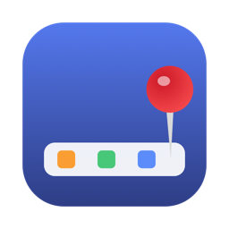
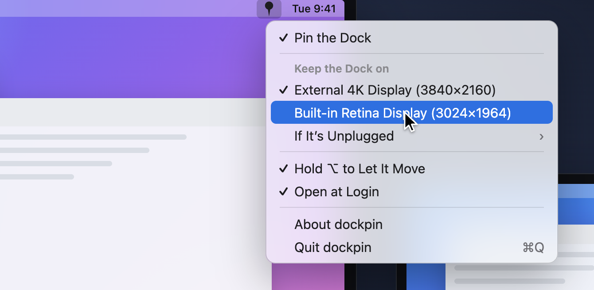

dockpin
macOS 13+ · Apple silicon & Intel · MIT
Keeps the Dock on one display. With more than one monitor, the Dock stops jumping to whichever screen you touch the bottom of, and comes back when macOS moves it after sleep.
Dock을 한 화면에 고정합니다. 모니터가 여러 대여도 아래쪽에 커서가 닿은 화면으로 Dock이 넘어가지 않고, 절전 뒤 macOS가 옮겨 놓아도 다시 데려옵니다.
brew install --cask esteban-eg-kim/tap/dockpin
